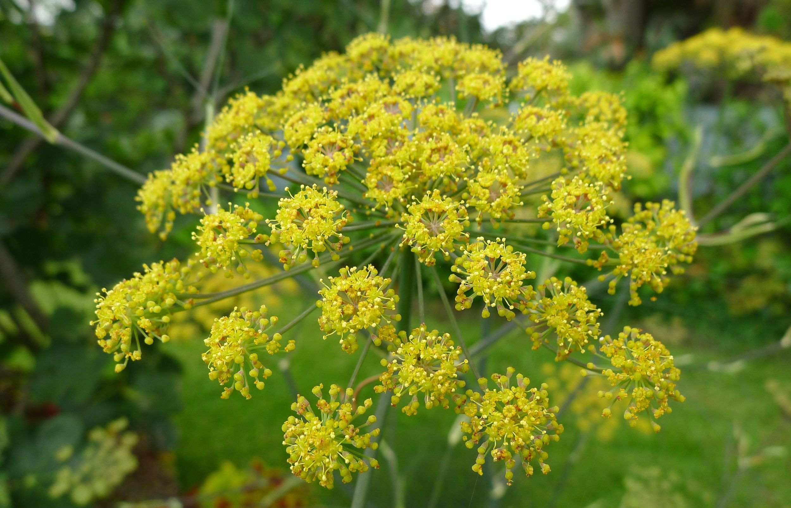

Camomila (Matricaria chamomilla) Princípio ativo Apigenina (flavonoide) Mecanismo Ligação a receptores GABAA → efeito calmante Efeito Auxilia no sono e relaxamento Cuidados Possível alergia em pessoas sensíveis
Hortelã (Mentha spicata) Princípio ativo Mentol Mecanismo Ativa canais TRPM8 → sensação refrescante; relaxa musculatura gástrica Efeito Melhora digestão e cólicas leves Cuidados Evitar excesso em refluxo
Alecrim (Rosmarinus officinalis) Princípio ativo Ácido rosmarínico (antioxidante) Mecanismo Atividade antioxidante e anti-inflamatória; modulação colinérgica Efeito Apoio à memória e circulação Cuidados Evitar doses altas em hipertensos não controlados
Erva-doce (Foeniculum vulgare)  Princípio ativo Anetol Mecanismo Ação carminativa; reduz espasmos intestinais Efeito Alívio de gases e cólicas Cuidados Uso moderado em gestantes; possível alergia
Boldo (Peumus boldus) Princípio ativo Boldina (alcaloide) Mecanismo Estimula fluxo biliar Efeito Auxilia digestão de gorduras Cuidados Evitar em obstrução biliar; não exceder
Gengibre (Zingiber officinale) Princípio ativo Gingerol Mecanismo Anti-inflamatório leve; reduz náuseas Efeito Auxilia digestão e náuseas Cuidados Usar com cautela em anticoagulantes
Capim-limão (Cymbopogon citratus) Princípio ativo Citral Mecanismo Efeito relaxante muscular Efeito Calmante, relaxamento Cuidados Evitar altas concentrações na pele
Alho (Allium sativum) Princípio ativo Alicina Mecanismo Ação antimicrobiana; efeito cardiovascular Efeito Apoio imunológico e do coração Cuidados Potencializa anticoagulantes; odor forte
Eucalipto (Eucalyptus globulus) Princípio ativo Eucaliptol (1,8-cineol) Mecanismo Ação expectorante e descongestionante Efeito Alívio em gripes e resfriados Cuidados Evitar em crianças pequenas
Lavanda (Lavandula angustifolia) Princípio ativo Linalol Mecanismo Atua em receptores do sistema nervoso Efeito Relaxante, auxilia no sono Cuidados Evitar uso excessivo de óleo essencial